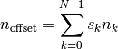

This is a brief introduction to reStructuredText. A more complete description may be found on the reST, Sphinx and Python, zh-sphinx, web pages of, as well as the notes of thomas cokelaer .
reStructuredText syntax provides an easy-to-read, what-you-see-is-what-you-get plaintext markup syntax and parser system.
There are two special text formating characters: * and `. The former is used to produce italics and bold text and the latter is used to define verbatim text as well as to create both internal and external links. The proper use of these special characters is summarized on the following table
| Usage | Syntax | HTML rendering |
|---|---|---|
| italic | *italic* | italic |
| bold | **bold** | bold |
| link | `Python <www.python.org>`_ | Python |
| verbatim | ``*`` | * |
There are, however, some restrictions on the use of * and `. They:
can not be nested,
content may not start or end with whitespace: * text* is wrong,
- it must be separated from surrounding text by non-word characters, like
a space.
The use of the escape character, \, fixes the last two restrictions.
Headers are used to break longer text up into sections. These are a single line of text with an underline (alone), or an underline and an overline of the same length (which should match the header length). The non-alphanumeric characters allowed in the declaration of headers are = - ` : ' " ~ ^ _ * + # < >
In Sphinx there are 3 types of links:
| Type | Declaration | Reference |
|---|---|---|
| External | `google <https://www.google.com>`_ | `google`_ |
| Implicit | Internal and external links
---------------------------
|
`Internal and external links`_ |
| Explicit | .. _myLabel: | myLabel_ Goes to the location where the label was declared :ref: `myLabel` Goes to the 1st header after the label declaration |
Sphinx and reST directives are the primary syntax extension mechanism. All directives have a common syntax:
.. Type:: Directive
block
Directives are used to include specific formated text. For example, the combination Type = code and Directive = python will highly python syntax
class MyClass():
def __init__(self,myNum=1):
self.myNum=myNum
Beside specific directives, there are simples ways to introduce literal code-blocks, that is to end a paragraph with the double colon marker :: and then insert the desired literal block (which should be indented). For example:
::
import math
print 'import math'
produces:
import math
print 'import math'
Simple directives such as note, seealso and warning create nice colored boxes:
note syntax:
.. note:: This is a **note** box
Note
This is a simple note box
seealso syntax:
.. seealso:: This is a **seealso** box
See also
This is a seealso box
warning syntax:
.. warning:: This is a **warning** box
Warning
This is a warning box
This directive allows to write a title and a text within a box. The topic syntax is as follows:
.. topic:: Title of you topic
The rest of the text goes here
Title of you topic
The rest of the text goes here
The syntax is pretty similar to that of topic:
.. sidebar:: Here goes the tile
And the rest goes here
Comments can made by adding two dots to the beginning of the line:
.. This will be a comment
The syntax to define a substitution is:
.. _Java: http://www.java.com
Then, references to them are done by inserting the _-suffixed alias in the text, i.e., Java_ yields Java in this case.
A second way to use substitutions is the following:
.. |myText| replace:: This is a very long text that will appear over and
over, better to use a label!!!
Now |myText| will yield “a very long text that will appear over and over, better to use a label!!!”
The syntax to create a new field is:
:newField: This is the declaration of a new field
| newField: | This is the declaration of a new field |
|---|
The syntax to create a glossary is:
.. glossary::
iconoclast
A person that does not believe in images of symbols
If you want to create a link to a file to be downloaded you simply need:
:download:`download myFile <myFile.py>`
please download thisFile
hlist can be used to set a list in several columns:
.. hlist::
:columns: 3
* first item
* second item
* 3d item
* 4th item
* 5th item
|
|
|
For footnotes, use [#name]_ to mark the footnote location, and add the footnote body at the bottom of the document, after a ``Footnotes`` rubric heading, like so:
Some text that requires a footnote [#f1]_ .
.. rubric:: Footnotes
.. [#f1] Text to the first footnote.
Here is an example of how to use auto-numbered footnotes [1] [2]
The inclusion of latex equations is achieved with the directive .. math::, however, before doing so, the extension sphinx.ext.pngmath has to be added in the config.py file:
extensions.append('sphinx.ext.pngmath')
Then, latex-math expressions can be included as:

Warning
The math markup can be used within RST files (to be parsed by Sphinx) but within your python’s docstring, the slashes need to be escaped !
:math:`\alpha` should therefore be written :math:`\\alpha` or put an “r” before the docstring
Footnotes
| [1] | This should be the 1st footnote |
| [2] | This should be the 2nd footnote |